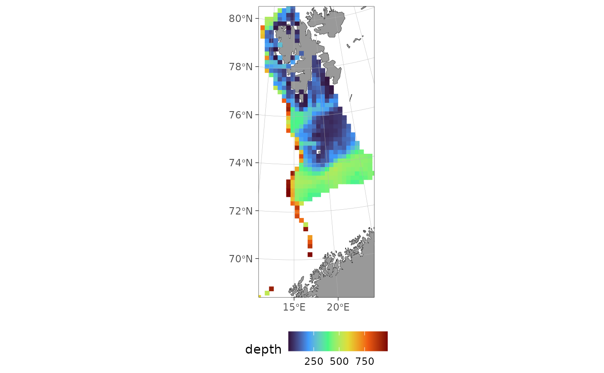

Creates a regular grid of centre points covering an sf region, at a given
spatial resolution. Optionally filters the grid by depth using a
user-supplied depth function. Coordinates are returned in the same units as
the model (divided by coord_multiplier).
Usage
make_prediction_grid(
region,
resolution,
crs = NULL,
coord_multiplier = 1000,
max_depth = NULL,
depth_fun = NULL,
bathy_style = "raster_continuous"
)Arguments
- region
An
sfpolygon defining the prediction area (e.g. frommake_survey_prediction_region()).- resolution
Numeric. Grid cell side length, in the model coordinate units (e.g. km). Internally multiplied by
coord_multiplierto match the CRS units.- crs
Coordinate reference system. If
NULL(default), taken fromregion.- coord_multiplier
Numeric factor to convert model units to CRS units. Default
1000.- max_depth
Optional numeric. If supplied, grid cells with depth outside
c(1, max_depth)are dropped. Turns on depth extraction (seedepth_fun/bathy_style).- depth_fun
Optional function taking an
sfpoints object and returning a numeric vector of (positive) depths. Only used whenmax_depthis set. IfNULL(default) whilemax_depthis set, depth is extracted automatically viaggOceanMaps::get_depth()usingbathy_style— supply your owndepth_funto use a different bathymetry source (e.g. a specific GEBCO file viabathy.style = "raster_user"andoptions(ggOceanMaps.userpath = ...), or a local raster/interpolation).- bathy_style
Character.
bathy.stylepassed toggOceanMaps::get_depth()whendepth_funisNULL. Default"raster_continuous"(ETOPO, bundled with ggOceanMaps — no extra download path needed). Ignored whendepth_funis supplied.
Value
A data frame (class sdmTMB_prediction_grid, so
plot.sdmTMB_prediction_grid() can be used on it directly) with columns
X, Y (in model units) and, when depth filtering is applied, a depth
column. Carries crs, coord_multiplier and resolution attributes.
Examples
# \donttest{
data(sebastes)
eggan <- subset(sebastes, cruiseseries == "EggaN")
region <- make_survey_prediction_region(eggan, crs = 32633, concavity = 5)
# max_depth turns on depth extraction, via ggOceanMaps::get_depth() by
# default (bathy_style controls the bathymetry source); cells outside
# c(1, max_depth) are dropped. plot() then colours by depth automatically.
grid <- make_prediction_grid(region, resolution = 20, max_depth = 1000)
#> Cannot find files: /tmp/RtmpMilpWM/dd_rbathy_cont.rda. Do you want
#> download them now?
range(grid$depth)
#> [1] 2.007292 975.687500
plot(grid)

# }